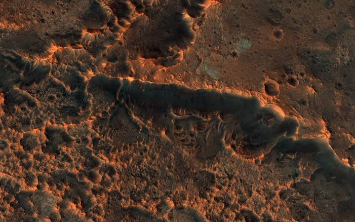
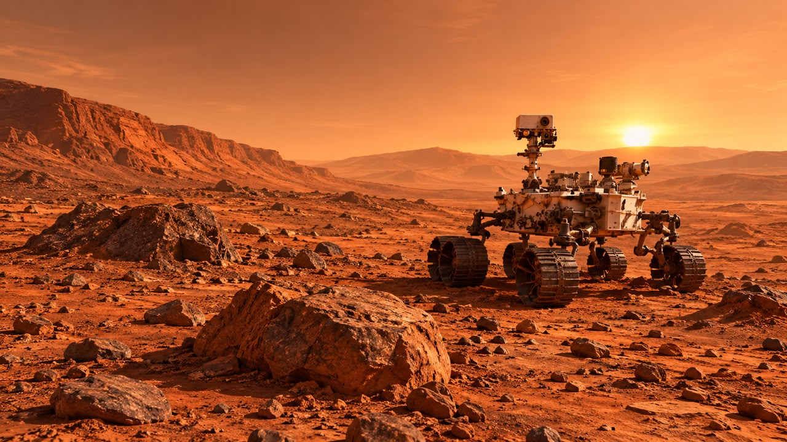

NASA DATA-DRIVEN PLANETARY EXPLORATION
Explore Mars through interactive planetary maps, geological information, rover imagery and intelligent exploration planning.
Begin Exploration →Beyond Earth. Into the Unknown.
PLANETARY EXPLORATION
Explore the Martian surface through interactive planetary maps.
Explore Map →Discover Martian geological formations and surface characteristics.
Explore Geology →Plan and investigate potential Martian exploration routes.
Plan Route →Discover photographs captured by NASA Mars exploration rovers.
View Gallery →PLANETARY CARTOGRAPHY
Interactive Mars map integration. Developed by Member 2.

PLANETARY SCIENCE
Geological data integration. Developed by Member 3.
MISSION NAVIGATION
Route planning functionality. Developed by Member 4.
ROVER OBSERVATIONS
Rover image integration. Developed by Member 5.
